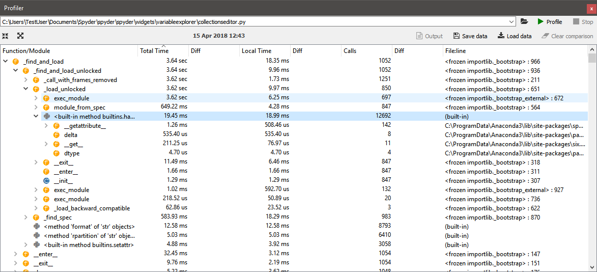

Profiler¶
The Profiler pane recursively determines the run time and number of calls for every function and method called in a file, whether directly or indirectly, breaking down each procedure into its smallest individual units. This allows you to easily identify the bottlenecks in your code, points you toward the exact statements most critical for optimization, and measures the performance delta after followup changes.
Running the Profiler¶
You can select the file to run in Spyder’s Profiler by simply clicking within it in the Editor, or you can manually enter the name/path in the Profiler’s path box (top left of the pane). Either way, you can then run it on the file by clicking , clicking Profile in the Profiler pane, or by using a configurable shortcut (F10 by default). If you’d like to cancel an in-progress run, click the Stop button in the top right, and if profiling fails for any reason, click the Output button to consult the log as to why.
Important
Currently, the Profiler only runs files with their working directory set to that of their file location on disk. Therefore, relative paths assuming a different working directly won’t work as intended, and should be replaced with absolute ones or should assume the working directory is that of the file. This limitation is planned to be resolved in a future version of Spyder.
To open and go directly to the file and line in the Editor where an item is the profiler was called, just double-click it. Increase the number of hierarchical levels displayed for a particular object by clicking the dropdown arrows to the left of the name, or increase/decrease the depth shown for all levels with the buttons in the top left, to the left of the timestamp. You can click the dropdown or press the Down Arrow key in the filename field to recall paths of previous profiled files. You can save the data for a given run to disk with the Save data button, and it can be loaded to compare with another run with the Load data button. To remove the loaded data, click the Clear comparison button.
Interpreting the results¶
Results are broken down by top-level function/method/statement, with each sub-element listed hierarchically under the top-level item that called them.
Total Time is that taken by the specified item and every function “underneath” (i.e. called by) it, while Local Time only counts the time spent in the particular callable object’s own scope.
The Calls column displays the total number of times the specified object was called at that level inside its parent calling function (or within the __main__ scope, if a top-level object).
Finally, the numbers in the Diff columns for each of the three appear if a comparison is loaded, and indicate the deltas between each measurement.

For example, suppose you ran the Profiler on a file calling a function print_wrapper() that in turn called the print() function, and the print_wrapper() function took a total of 3 ms to run, with 2 ms of that spent executing the print() function inside it.
Therefore, if print() called nothing else itself, its Total Time and Local Time would both be identical, at 2 ms.
Meanwhile, Total Time for print_wrapper() would be 3 ms, but Local Time only 1 ms as the rest of that time was spend inside the print() function it called.